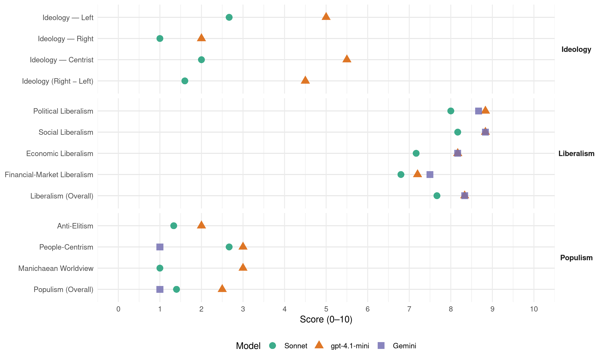

V (Norway, 2017)
manifesto_id 12420_201709
Get full text: This site shows derived annotations and short verbatim quotes only. The full manifesto text is © Manifesto Project / WZB — obtain it via manifesto-project.wzb.eu using the manifesto_id above.
Headline scores
| Dimension | Sonnet | gpt-4.1-mini | Gemini |
|---|---|---|---|
| Populism (Overall) | 1.4 | 2.5 | 1.0 |
| Anti-Elitism | 1.3 | 2.0 | – |
| People-Centrism | 2.7 | 3.0 | 1.0 |
| Manichaean Worldview | 1.0 | 3.0 | – |
| Ideology (Right − Left) | 1.6 | 4.5 | – |
| Liberalism (Overall) | 7.7 | 8.3 | 8.3 |
| Political Liberalism | 8.0 | 8.8 | 8.7 |
| Social Liberalism | 8.2 | 8.8 | 8.8 |
| Economic Liberalism | 7.2 | 8.2 | 8.2 |
| Financial-Market Liberalism | 6.8 | 7.2 | 7.5 |
Evidence per dimension
Economic Liberalism
Gemini · score 7.0 · verified · chunk 1
“grønn konkurransekraft må skapes gjennom velfungerende markeder”
alle nye forslag skal inkludere en vurdering av CO2-effekter der det er relevant. grønn konkurransekraft må skapes gjennom velfungerende markeder. forskning skal vris fra det fossile til det grønne.
Gemini · score 9.0 · verified · chunk 2
“åpen og fri konkurranse med like spilleregler”
Venstre vil legge til rette for åpen og fri konkurranse med like spilleregler for både små og store bedrifter.
Gemini · score 8.0 · verified · chunk 3
“sikrer like konkurransevilkår”
forutsigbart rammeverk for nye næringer, som sikrer like konkurransevilkår, men som ikke er innovasjonshemmende. gjøre det
Gemini · score 8.0 · verified · chunk 4
“legge til rette for at det blir mer konkurranse”
miljøvennlige boliger. Dette innebærer både å stille miljøkrav til nybygg og å legge til rette for at det blir mer konkurranse mellom boligutviklere.
Gemini · score 8.0 · verified · chunk 5
“gode forbrukerrettigheter er avgjørende for en tillitsbasert markedsøkonomi”
17.10 Rettigheter som forbruker Gode forbrukerrettigheter er avgjørende for en tillitsbasert markedsøkonomi. I møte med profesjonelle aktører er det avgjørende
Gemini · score 9.0 · verified · chunk 6
“åpen verdensøkonomi”
å bidra til en åpen verdensøkonomi.
gpt-4.1-mini · score 8.0 · verified · chunk 1
“Venstre vil ha et utdanningssystem i verdensklasse. Et utdanningssystem som legger til rette for intensivt internasjonalt samarbeid, og som er utformet for å dekke kunnskapsbehovene i framtidas velferdssamfunn.”
…Venstre vil ha et utdanningssystem i verdensklasse. Et utdanningssystem som legger til rette for intensivt internasjonalt samarbeid, og som er utformet for å dekke kunnskapsbehovene i framtidas velferdssamfunn. Et utdanningssystem for framtida er avhengig av at det etableres fremragende forskningsmiljøer i dag…
gpt-4.1-mini · score 8.0 · verified · chunk 2
“skatte smartere for å stimulere til grønn næringsutvikling”
En grønn økonomi vil ta vare på jorda vår og være levedyktig også når oljen tar slutt. Det betyr at vi er nødt til å skatte smartere for å stimulere til grønn næringsutvikling og grønn livsførsel.
gpt-4.1-mini · score 8.0 · verified · chunk 3
“Venstre vil legge til rette for flere lønnsomme industribedrifter innen jordbruk, skogbruk, fiskeri og havbruk gjennom endrede skatteregler”
Venstre vil legge til rette for flere lønnsomme industribedrifter innen jordbruk, skogbruk, fiskeri og havbruk gjennom endrede skatteregler. øke nivået på skogavvirkningen av hogstmoden skog og utnytte hele treet, også avfalls- og biprodukter som GROT, i produksjon av bioenergi.
gpt-4.1-mini · score 8.0 · verified · chunk 4
“stimulere til utbygging av flere utleieboliger av god kvalitet”
Venstre vil vurdere nye tiltak for å stimulere til utbygging av flere utleieboliger av god kvalitet.
gpt-4.1-mini · score 8.0 · verified · chunk 5
“Venstre vil bruke Husbanken aktivt både til å påvirke hva slags boliger som bygges”
Venstre vil bruke Husbanken aktivt både til å påvirke hva slags boliger som bygges, og til å styrke dem som står svakt i boligmarkedet gjennom gode låneordninger. Det må bygges flere utleieboliger, flere studentboliger, flere boliger for ungdom (Ungbo) og flere boliger tilpasset eldre.
gpt-4.1-mini · score 9.0 · verified · chunk 6
“En åpen økonomi og et friere marked skaper velstand”
En åpen økonomi og et friere marked skaper velstand. Andelen fattige er halvert siden 1990, og forskjellene mellom de fattigste og rikeste landene i verden er kraftig redusert. Men ulikhetene innad i landene ser ut til å vokse.
Sonnet · score 7.0 · verified · chunk 1
“grønn konkurransekraft må skapes gjennom velfungerende markeder”
grønn konkurransekraft må skapes gjennom velfungerende markeder
Sonnet · score 7.0 · verified · chunk 2
“lavere skatt på arbeid og bedrifter”
Venstre vil derfor ha lavere skatt på arbeid, eierskap og bedrifter og ha høyere skatter og avgifter på klima
Sonnet · score 7.0 · verified · chunk 3
“legge til rette for økt konkurranse innenfor detaljhandel”
legge til rette for økt konkurranse innenfor detaljhandel og distribusjon av matvarer og andre dagligvarer, bla gjennom likere rammevilkår for kiosker, bensinstasjoner og dagligvarebutikker.
Sonnet · score 7.0 · verified · chunk 4
“mer konkurranse mellom boligutviklere”
Venstre vil ha en boligpolitikk som stimulerer til at det bygges flere og mer miljøvennlige boliger… legge til rette for at det blir mer konkurranse mellom boligutviklere.
Sonnet · score 7.0 · verified · chunk 5
“åpne for at bankene kan utøve mer skjønn”
åpne for at bankene kan utøve mer skjønn i vurderingen av om egenkapitalkravet er oppnådd ved søknad om lån. sikre startlån til vanskeligstilte
Sonnet · score 8.0 · verified · chunk 6
“En åpen økonomi og et friere marked skaper velstand”
21.8 Mer rettferdig internasjonal handel En åpen økonomi og et friere marked skaper velstand. Andelen fattige er halvert siden 1990.
Financial-Market Liberalism
Gemini · score 8.0 · verified · chunk 2
“finansielle ubalanser. Derfor vil vi ha en vurdering”
best mulig skattesystem som forbygger finansielle ubalanser. Derfor vil vi ha en vurdering av bedrifters og personers rentefradrag
Gemini · score 8.0 · verified · chunk 3
“finansiering av grønne investeringer”
Norge har stort potensial til å ta en posisjon internasjonalt, som finansiering av grønne investeringer. utvikle et marked for grønne obligasjoner
Gemini · score 6.0 · verified · chunk 5
“åpne for at bankene kan utøve mer skjønn”
lån til ordinære utleieboliger på samme måte som til sosialboliger. åpne for at bankene kan utøve mer skjønn i vurderingen av om egenkapitalkravet er oppnådd
Gemini · score 8.0 · verified · chunk 6
“fri bevegelse av personer, varer, tjenester og kapital”
Norge er en del av EUs indre marked gjennom EØS-avtalen. Avtalen sikrer fri bevegelse av personer, varer, tjenester og kapital og gir norske bedrifter adgang
gpt-4.1-mini · score 7.0 · verified · chunk 1
“Venstre vil øke basisbevilgningen til universiteter og høyskoler. etablere en tilskuddsordning til infrastruktur i private høyskoler (husleietilskudd). revidere Samordna opptak for utdanning, blant annet ved å fjerne tilleggspoeng for virksomhet som ikke er studierelatert.”
…Venstre vil øke basisbevilgningen til universiteter og høyskoler. etablere en tilskuddsordning til infrastruktur i private høyskoler (husleietilskudd). revidere Samordna opptak for utdanning, blant annet ved å fjerne tilleggspoeng for virksomhet som ikke er studierelatert, og ved å la utdanningsinstitusjonene få bestemme inntakskriterier og inntakskrav til studiene i større grad…
gpt-4.1-mini · score 7.0 · verified · chunk 2
“investere mer av SPU i fornybar energi og klimavennlig teknologi”
Venstre vil investere mer av SPU i fornybar energi og klimavennlig teknologi. stille krav om større åpenhet om og integrering av faktorer knyttet til miljø, samfunn og selskapsledelse (ESG-faktorer) i risikovurderingen ved valg av aksjer og porteføljediversifisering i SPU.
gpt-4.1-mini · score 7.0 · verified · chunk 3
“Venstre vil utvikle et marked for grønne obligasjoner i dialog med finansnæringen”
Venstre vil utvikle et marked for grønne obligasjoner i dialog med finansnæringen. endre finansskatten til å bli en ren skatt på overskudd (og ikke en ekstra arbeidsgiveravgift). «Venstre vil gripe forretningsmulighetene i det grønne skiftet».
gpt-4.1-mini · score 7.0 · verified · chunk 5
“Venstre vil utforme eierseksjonsloven og borettslagsloven slik at de faste beboerne kan sikre seg gode og tilsiktede boforhold”
Venstre vil utforme eierseksjonsloven og borettslagsloven slik at de faste beboerne kan sikre seg gode og tilsiktede boforhold. Øke lånerammene til Husbanken for å kunne gi lån til ordinære utleieboliger på samme måte som til sosialboliger.
gpt-4.1-mini · score 8.0 · verified · chunk 6
“Venstre vil arbeide for internasjonale reguleringer for å hindre hemmelighold i skatteparadiser”
Venstre vil arbeide for internasjonale reguleringer for å hindre hemmelighold i skatteparadiser. fremme en mer rettferdig beskatning av internasjonale selskaper. styrke fri import av varer fra lavinntektsland og lavere mellominntektsland.
Sonnet · score 7.0 · verified · chunk 1
“private aktører bidrar”
innovative finansieringsmekanismer, der også private aktører bidrar, som supplement til den offentlige finansieringen
Sonnet · score 7.0 · verified · chunk 2
“sikre at norsk finansnæring har like konkurransevilkår”
sikre at norsk finansnæring har like konkurransevilkår som europeiske konkurrenter
Sonnet · score 7.0 · verified · chunk 3
“utvikle et marked for grønne obligasjoner”
utvikle et marked for grønne obligasjoner i dialog med finansnæringen. endre finansskatten til å bli en ren skatt på overskudd
Sonnet · score 6.0 · verified · chunk 4
“åpne for at bankene kan utøve mer skjønn”
åpne for at bankene kan utøve mer skjønn i vurderingen av om egenkapitalkravet er oppnådd ved søknad om lån.
Sonnet · score 5.0 · mixed · chunk 5
“regulere dette lånemarkedet bedre”
Venstre vil derfor regulere dette lånemarkedet bedre, og slik at långiver tar en større andel av risikoen ved mislighold av slike lån. Den effektive renten for slike lån bør oppad begrenses
Sonnet · score 7.0 · verified · chunk 6
“åpne markeder for varer fra lav- og mellominntektsland”
arbeide for at alle rike land åpner sine markeder for varer fra lav- og mellominntektsland. Varer fra alle lavinntektsland og noen mellominntektsland må fritas all toll i Norge.
Political Liberalism
Gemini · score 8.0 · verified · chunk 1
“utvikle forståelse for demokrati, samfunnsansvar”
Den er også en viktig arena for å utvikle forståelse for demokrati, samfunnsansvar og livsmestring.
Gemini · score 8.0 · verified · chunk 2
“fordele makt og ressurser over hele landet”
For Venstre er det viktig å fordele makt og ressurser over hele landet. Norge er langstrakt, med et stort mangfold
Gemini · score 8.0 · verified · chunk 3
“del av Venstres barne- og familiepolitikk”
full barnehagedekning og en god skole sentrale elementer i Venstres barne- og familiepolitikk. at far skal få lik rett til opparbeiding
Gemini · score 9.0 · verified · chunk 4
“støtten til kulturlivet er en viktig investering i demokratiet”
forutsetning for en opplyst offentlighet, og støtten til kulturlivet er en viktig investering i demokratiet. Idrett er en av våre viktigste massekulturer.
Gemini · score 9.0 · verified · chunk 5
“støtten til kulturlivet er en viktig investering i demokratiet”
forutsetning for en opplyst offentlighet, og støtten til kulturlivet er en viktig investering i demokratiet. Idrett er en av våre viktigste massekulturer.
Gemini · score 10.0 · verified · chunk 6
“Maktfordelingsprinsippet sikrer at maktutøvelse er delt”
Fakta: Rettsstatens prinsipper En rettsstat er en stat med et velutviklet og sivilisert rettssystem basert på følgende prinsipper: Maktfordelingsprinsippet sikrer at maktutøvelse er delt på tre uavhengige myndigheter
gpt-4.1-mini · score 9.0 · verified · chunk 1
“Skolens viktigste oppgave er å utvikle elevenes kunnskaper, ferdigheter og forståelse, og utvikle evnen til å anvende kompetansen. Den er også en viktig arena for å utvikle forståelse for demokrati, samfunnsansvar og livsmestring.”
…Skolens viktigste oppgave er å utvikle elevenes kunnskaper, ferdigheter og forståelse, og utvikle evnen til å anvende kompetansen. Den er også en viktig arena for å utvikle forståelse for demokrati, samfunnsansvar og livsmestring. I den femårige lærerutdanningen må det legges til rette for spesialisering i praktisk-estetiske fag…
gpt-4.1-mini · score 8.0 · verified · chunk 2
“Norges internasjonale forpliktelse for 2030 under Paris-avtalen”
at Norges internasjonale forpliktelse for 2030 under Paris-avtalen skal bli mer ambisiøs når den oppdateres i 2020, samt at denne forpliktelsen skal legge til grunn at Norge skal være klimanøytralt innen 2030 gjennom tiltak innenlands, opptak i skog og internasjonale tiltak.
gpt-4.1-mini · score 9.0 · verified · chunk 3
“Venstre vil sikre at digitalisering og digital tjenesteutvikling skal være en viktig del av kommunereformen”
Venstre vil sikre at digitalisering og digital tjenesteutvikling skal være en viktig del av kommunereformen og andre endringsprosesser i offentlig sektor. tilpasse arbeidsmiljøloven til den fleksibilitet som ny teknologi medfører. legge til rette for mer samordning og bedre koordinering av offentlige tjenester.
gpt-4.1-mini · score 9.0 · verified · chunk 4
“sterke, frie medier. et sterkt kildevern”
16 Mangfoldig og fritt kulturliv … sterke, frie medier. et sterkt kildevern.
gpt-4.1-mini · score 9.0 · verified · chunk 5
“Ytringsfriheten, pressefriheten og informasjonsfriheten er grunnleggende verdier”
Ytringsfriheten, pressefriheten og informasjonsfriheten er grunnleggende verdier i et demokratisk og åpent samfunn. Derfor er det viktig å legge til rette for god og allsidig nyhets- og aktualitetsproduksjon som et grunnlag for den offentlige samtalen.
gpt-4.1-mini · score 9.0 · verified · chunk 6
“Rettssikkerhetsprinsippet innebærer at borgerne skal beskyttes mot overgrep fra myndighetene”
Legalitetsprinsippet sier at den utøvende makt aldri kan gripe inn overfor eller dømme landets borgere uten å ha hjemmel til dette i de gjeldende rettsregler. Rettssikkerhetsprinsippet innebærer at borgerne skal beskyttes mot overgrep fra myndighetene og mot overgrep fra andre borgere. Folkesuverenitetsprinsippet innebærer at makten må utgå fra folket, og at utøvelse av statlig myndighet må skje med utgangspunkt i en folkevalgt nasjonalforsamling.
Sonnet · score 8.0 · verified · chunk 1
“Kunnskap er grunnlaget for demokrati”
Kunnskap er grunnlaget for demokrati, verdiskaping og velferd
Sonnet · score 7.0 · verified · chunk 2
“opprette et uavhengig finanspolitisk råd”
opprette et uavhengig finanspolitisk råd etter modell fra tilsvarende svensk ordning
Sonnet · score 7.0 · verified · chunk 3
“Deling av offentlige data styrker demokratiet”
Deling av offentlige data styrker demokratiet ved at det gir større grad av innsyn i ulike beslutningsprosesser. Det er effektivt og innovativt å dele offentlige data.
Sonnet · score 8.0 · verified · chunk 4
“arbeide for å etablere en uavhengig Utlendingsdomstol”
gjøre klagebehandlingen likere prosessen i en domstol… arbeide for å etablere en uavhengig Utlendingsdomstol. at flere asylsøkere skal få mulighet til å forklare seg
Sonnet · score 9.0 · verified · chunk 5
“Åpenhet og innsyn er grunnleggende i et demokrati”
Åpenhet og innsyn er grunnleggende i et demokrati. Åpenhet gir borgerne mulighet for større innflytelse i beslutningsprosesser og er svært viktig for å opprettholde allmenn tillit til det politiske systemet
Sonnet · score 9.0 · verified · chunk 6
“Balansen mellom stat og borgere er det som skiller et demokrati”
Bruken av tvang overfor borgere aldri må være større enn det som er nødvendig og forholdsmessig. Balansen mellom stat og borgere er det som skiller et demokrati fra andre, mer autoritære styreformer.
Liberalism (Overall)
Gemini · score 8.0 · verified · chunk 1
“grønn konkurransekraft må skapes gjennom velfungerende markeder”
alle nye forslag skal inkludere en vurdering av CO2-effekter der det er relevant. grønn konkurransekraft må skapes gjennom velfungerende markeder. forskning skal vris fra det fossile til det grønne.
Gemini · score 8.0 · verified · chunk 2
“åpen og fri konkurranse med like spilleregler”
Venstre vil legge til rette for åpen og fri konkurranse med like spilleregler for både små og store bedrifter.
Gemini · score 8.0 · verified · chunk 3
“I et liberalt samfunn”
definisjonen av det gode liv varierer fra person til person, fra familie til familie. I et liberalt samfunn er det en egenverdi at flest mulig
Gemini · score 9.0 · verified · chunk 4
“Muligheten til fri bevegelse er en grunnleggende liberal verdi”
13 Innvandring og integrering Muligheten til fri bevegelse er en grunnleggende liberal verdi. Innvandring stimulerer oss sosialt, kulturelt og
Gemini · score 8.0 · verified · chunk 5
“Å være liberal betyr å jobbe for å sikre folk mest mulig frihet”
17 Liberale rettigheter Å være liberal betyr å jobbe for å sikre folk mest mulig frihet innenfor fellesskapets rammer. På den ene siden handler
Gemini · score 9.0 · verified · chunk 6
“Maktfordelingsprinsippet sikrer at maktutøvelse er delt”
Fakta: Rettsstatens prinsipper En rettsstat er en stat med et velutviklet og sivilisert rettssystem basert på følgende prinsipper: Maktfordelingsprinsippet sikrer at maktutøvelse er delt på tre uavhengige myndigheter
gpt-4.1-mini · score 8.0 · verified · chunk 1
“Venstre vil ha et utdanningssystem i verdensklasse. Et utdanningssystem som legger til rette for intensivt internasjonalt samarbeid, og som er utformet for å dekke kunnskapsbehovene i framtidas velferdssamfunn.”
…Venstre vil ha et utdanningssystem i verdensklasse. Et utdanningssystem som legger til rette for intensivt internasjonalt samarbeid, og som er utformet for å dekke kunnskapsbehovene i framtidas velferdssamfunn. Et utdanningssystem for framtida er avhengig av at det etableres fremragende forskningsmiljøer i dag…
gpt-4.1-mini · score 8.0 · verified · chunk 2
“skatte smartere for å stimulere til grønn næringsutvikling”
En grønn økonomi vil ta vare på jorda vår og være levedyktig også når oljen tar slutt. Det betyr at vi er nødt til å skatte smartere for å stimulere til grønn næringsutvikling og grønn livsførsel.
gpt-4.1-mini · score 8.0 · verified · chunk 3
“Venstre vil sikre at digitalisering og digital tjenesteutvikling skal være en viktig del av kommunereformen”
Venstre vil sikre at digitalisering og digital tjenesteutvikling skal være en viktig del av kommunereformen og andre endringsprosesser i offentlig sektor. tilpasse arbeidsmiljøloven til den fleksibilitet som ny teknologi medfører. legge til rette for mer samordning og bedre koordinering av offentlige tjenester.
gpt-4.1-mini · score 9.0 · verified · chunk 4
“sterke, frie medier. et sterkt kildevern”
16 Mangfoldig og fritt kulturliv … sterke, frie medier. et sterkt kildevern.
gpt-4.1-mini · score 8.0 · verified · chunk 5
“Ytringsfriheten, pressefriheten og informasjonsfriheten er grunnleggende verdier”
Ytringsfriheten, pressefriheten og informasjonsfriheten er grunnleggende verdier i et demokratisk og åpent samfunn. Derfor er det viktig å legge til rette for god og allsidig nyhets- og aktualitetsproduksjon som et grunnlag for den offentlige samtalen.
gpt-4.1-mini · score 9.0 · verified · chunk 6
“Venstre vil arbeide for internasjonale reguleringer for å hindre hemmelighold i skatteparadiser”
Venstre vil arbeide for internasjonale reguleringer for å hindre hemmelighold i skatteparadiser. fremme en mer rettferdig beskatning av internasjonale selskaper. styrke fri import av varer fra lavinntektsland og lavere mellominntektsland.
Sonnet · score 8.0 · verified · chunk 1
“grønn konkurransekraft må skapes gjennom velfungerende markeder”
grønn konkurransekraft må skapes gjennom velfungerende markeder
Sonnet · score 7.0 · verified · chunk 2
“lavere skatt på arbeid, eierskap og bedrifter”
Venstre vil derfor ha lavere skatt på arbeid, eierskap og bedrifter og ha høyere skatter og avgifter
Sonnet · score 7.0 · verified · chunk 3
“sikre at norsk finansnæring har like konkurransevilkår”
sikre at norsk finansnæring har like konkurransevilkår som europeiske konkurrenter. styrke universitets– og høyskoleutdanningen innenfor IT generelt og finansteknologi spesielt.
Sonnet · score 8.0 · verified · chunk 4
“Muligheten til fri bevegelse er en grunnleggende liberal verdi”
13 Innvandring og integrering Muligheten til fri bevegelse er en grunnleggende liberal verdi. Innvandring stimulerer oss sosialt, kulturelt og økonomisk
Sonnet · score 8.0 · verified · chunk 5
“sikre folk mest mulig frihet innenfor fellesskapets rammer”
Å være liberal betyr å jobbe for å sikre folk mest mulig frihet innenfor fellesskapets rammer. På den ene siden handler dette om å sikre borgerne frihet til noe
Sonnet · score 8.0 · verified · chunk 6
“de grunnleggende liberale verdiene som demokrati, menneskerettigheter”
I dag er de grunnleggende liberale verdiene som demokrati, menneskerettigheter og rettsstaten under press. Autoritære regimer og fundamentalistiske bevegelser er på fremmarsj.
Anti-Elitism
gpt-4.1-mini · score 2.0 · verified · chunk 2
“markedet for olje og gass skrumpe inn”
I takt med at fossilandelen og klimagassutslippene går ned, vil markedet for olje og gass skrumpe inn. Samtidig vil markedet for de fornybare energibærerne og de moderne nullutslippsløsningene vokse.
gpt-4.1-mini · score 2.0 · verified · chunk 4
“skjerpe innsatsen mot sosial dumping”
Venstre vil legge til rette for arbeidsinnvandring, men vil samtidig skjerpe innsatsen mot sosial dumping. Muligheten til å søke asyl er en grunnleggende menneskerett.
Sonnet · score 1.0 · verified · chunk 1
“skolebyråkratiet”
gjennomgå lærernes arbeidssituasjon med tanke på å redusere skolebyråkratiet
Sonnet · score 1.0 · mixed · chunk 2
“store samfunnsressurser i en sektor”
unngår vi å låse store samfunnsressurser i en sektor som vil ha fallende lønnsomhet
Sonnet · score 2.0 · mixed · chunk 3
“eierskapet» til det som er vår felles naturressurs faller på få hender”
Venstre mener dette er en uheldig utvikling og fører til at «eierskapet» til det som er vår felles naturressurs faller på få hender. Fiskekvoter er ikke en handelsvare.
Sonnet · score 2.0 · mixed · chunk 4
“AFP gir rettigheter for drøyt halvparten”
AFP har gått fra å være en målrettet ordning… til å bli en generell tilleggspensjon for fagorganiserte… AFP gir rettigheter for drøyt halvparten av oss, men delfinansieres av alle arbeidstakere
Sonnet · score 2.0 · verified · chunk 5
“lobbyister har betydelig innflytelse over beslutningsprosesser”
Lobbyister har betydelig innflytelse over beslutningsprosesser gjennom lukkede møter med beslutningstakere. Venstre vil etablere et lobbyregister
Sonnet · score 1.0 · verified · chunk 6
“Krigen mot narkotika har feilet”
19.10 Kunnskapsbasert ruspolitikk Krigen mot narkotika har feilet. Den har hatt forferdelige konsekvenser for både individer og samfunn over hele verden.
Ideology — Centrist
gpt-4.1-mini · score 5.0 · verified · chunk 2
“Norge skal ta en lederrolle i det internasjonale klima- og miljøarbeidet”
Venstre mener at Norge skal ta en lederrolle i det internasjonale klima- og miljøarbeidet. Vi har allerede markert oss som et foregangsland med våre bidrag til bevaring av biologisk mangfold og støtte til bevaringstiltak for tropisk skog.
gpt-4.1-mini · score 6.0 · verified · chunk 4
“å inkludere nye mennesker i samfunnet”
Kjennetegnet på en vellykket innvandringspolitikk er om vi klarer å integrere og inkludere nye mennesker i samfunnet. Å inkludere handler om å forene ulike mennesker uavhengig av forutsetninger og bakgrunn.
Sonnet · score 2.0 · verified · chunk 1
“like muligheter til utdanning”
Like muligheter til utdanning er en av de viktigste forutsetningene for personlig frihet
Sonnet · score 2.0 · verified · chunk 2
“folk flest i Norge en enklere”
Det vil både gi folk flest i Norge en enklere og bedre hverdag
Sonnet · score 2.0 · verified · chunk 3
“Fisken i havet tilhører fellesskapet”
Fisken i havet tilhører fellesskapet. Lovverk og reguleringer må fremme sysselsetting i kystkommunene og øke lønnsomheten i flåte og industri.
Sonnet · score 2.0 · verified · chunk 4
“Venstre vil gi folk muligheter”
«Venstre vil gi folk muligheter til å stå lenger i jobb.» Venstre vil avvikle særaldersgrenser i pensjonssystemet
Sonnet · score 3.0 · verified · chunk 5
“flytte politisk makt nærmere lokalsamfunn og borgere”
Derfor arbeider vi for å flytte politisk makt nærmere lokalsamfunn og borgere. Sterkere kommuner og en mer åpen forvaltning
Sonnet · score 1.0 · verified · chunk 6
“makten må utgå fra folket”
Folkesuverenitetsprinsippet innebærer at makten må utgå fra folket, og at utøvelse av statlig myndighet må skje med utgangspunkt i en folkevalgt nasjonalforsamling.
Ideology — Left
gpt-4.1-mini · score 7.0 · verified · chunk 2
“høy CO2-avgift som sikrer at bare den olje og gass med lavest CO2-avtrykk utvinnes”
På veien mot 2030 må vi ha en høy CO2-avgift som sikrer at bare den olje og gass med lavest CO2-avtrykk utvinnes på norsk sokkel. Venstre vil at spesielt sårbare områder skal vernes permanent.
gpt-4.1-mini · score 3.0 · verified · chunk 4
“skjerpe innsatsen mot sosial dumping”
Venstre vil legge til rette for arbeidsinnvandring, men vil samtidig skjerpe innsatsen mot sosial dumping. Muligheten til å søke asyl er en grunnleggende menneskerett.
Sonnet · score 2.0 · verified · chunk 1
“gratis barnehage for alle barn i lavinntektsfamilier”
Venstre vil ha gratis barnehage for alle barn i lavinntektsfamilier, samtidig som vi styrker kvaliteten
Sonnet · score 3.0 · verified · chunk 2
“bekjempe faktorer som internasjonalt bidrar til ulikhet”
bekjempe faktorer som internasjonalt bidrar til ulikhet, blant annet skatteparadiser og urimelig høye lederlønninger
Sonnet · score 3.0 · verified · chunk 3
“ressursrente i fiskeri- og sjømatnæringen”
utrede ressursrente i fiskeri- og sjømatnæringen. etablere en støtteordning for å bygge om/investere i miljøvennlige motorer i fiskeflåten
Sonnet · score 4.0 · verified · chunk 4
“innføre gratis barnehage og SFO for lavinntektsfamilier”
Venstres førsteprioritet i sosialpolitikken er å bekjempe fattigdom… Venstre vil innføre gratis barnehage og SFO for lavinntektsfamilier.
Sonnet · score 2.0 · verified · chunk 5
“redusere de store lønnsforskjellene mellom likeverdige yrker”
I arbeidslivet er det behov for en særlig innsats for å redusere de store lønnsforskjellene mellom likeverdige yrker, og dermed også blant kvinner og menn
Sonnet · score 2.0 · verified · chunk 6
“fremme en mer rettferdig beskatning av internasjonale selskaper”
Venstre vil arbeide for internasjonale reguleringer for å hindre hemmelighold i skatteparadiser og fremme en mer rettferdig beskatning av internasjonale selskaper.
Ideology (Right − Left)
gpt-4.1-mini · score 5.0 · verified · chunk 2
“Norge skal ta en lederrolle i det internasjonale klima- og miljøarbeidet”
Venstre mener at Norge skal ta en lederrolle i det internasjonale klima- og miljøarbeidet. Vi har allerede markert oss som et foregangsland med våre bidrag til bevaring av biologisk mangfold og støtte til bevaringstiltak for tropisk skog.
gpt-4.1-mini · score 4.0 · verified · chunk 4
“skjerpe innsatsen mot sosial dumping”
Venstre vil legge til rette for arbeidsinnvandring, men vil samtidig skjerpe innsatsen mot sosial dumping. Muligheten til å søke asyl er en grunnleggende menneskerett.
Sonnet · score 1.0 · verified · chunk 1
“gratis barnehage for alle barn i lavinntektsfamilier”
Venstre vil ha gratis barnehage for alle barn i lavinntektsfamilier, samtidig som vi styrker kvaliteten
Sonnet · score 2.0 · verified · chunk 2
“bekjempe faktorer som internasjonalt bidrar til ulikhet”
bekjempe faktorer som internasjonalt bidrar til ulikhet, blant annet skatteparadiser
Sonnet · score 2.0 · mixed · chunk 3
“ressursrente i fiskeri- og sjømatnæringen”
utrede ressursrente i fiskeri- og sjømatnæringen. etablere en støtteordning for å bygge om/investere i miljøvennlige motorer i fiskeflåten
Sonnet · score 2.0 · verified · chunk 4
“innføre gratis barnehage og SFO for lavinntektsfamilier”
Venstres førsteprioritet i sosialpolitikken er å bekjempe fattigdom… Venstre vil innføre gratis barnehage og SFO for lavinntektsfamilier.
Sonnet · score 2.0 · verified · chunk 5
“flytte mer makt og myndighet nærmere folk”
Venstre vil derfor redusere byråkratiet og flytte mer makt og myndighet nærmere folk.
Sonnet · score 1.0 · verified · chunk 6
“Krigen mot narkotika har feilet”
19.10 Kunnskapsbasert ruspolitikk Krigen mot narkotika har feilet. Den har hatt forferdelige konsekvenser for både individer og samfunn over hele verden.
Ideology — Right
gpt-4.1-mini · score 2.0 · verified · chunk 2
“vern av sårbare områder, inkludert Lofoten, Vesterålen og Senja”
Venstre vil gi permanent vern av sårbare områder, inkludert Lofoten, Vesterålen og Senja, Svalbard, Jan Mayen, Skagerak, Mørefeltene, Jærkysten, kystnære områder av Finnmark og i og ved iskanten og polarfronten.
gpt-4.1-mini · score 2.0 · verified · chunk 4
“rask retur ved avslag”
Venstre vil ha rask retur ved avslag. Venstre vil gjøre familieinnvandring enklere. Venstre vil styrke veiledningen til asylsøkere med endelig avslag slik at de blir bedre i stand til å ta nødvendige beslutninger.
Sonnet · score 1.0 · verified · chunk 4
“raskt returnere dem som ikke har beskyttelsesbehov”
motta og inkludere dem som har behov for beskyttelse, og raskt returnere dem som ikke har beskyttelsesbehov, til hjemlandet.
Sonnet · score 1.0 · verified · chunk 6
“norsk suverenitet og forsvare norske interesser”
Venstre er opptatt av at Norge har nødvendige ressurser og muligheter til å hevde norsk suverenitet og forsvare norske interesser.
Manichaean Worldview
gpt-4.1-mini · score 3.0 · verified · chunk 2
“sårbare områder skal vernes permanent”
Venstre vil at spesielt sårbare områder skal vernes permanent. I tillegg må ordningen med tildeling av forhåndsdefinerte arealer (TFO-ordningen) brukes slik den var opprinnelig ment, og skattesystemet må endres.
Sonnet · score 1.0 · verified · chunk 1
“de sterkeste og de svakeste elevene”
forskjellene mellom de sterkeste og de svakeste elevene øker underveis i utdanningsløpet
Sonnet · score 1.0 · verified · chunk 4
“Dette er urettferdig og feil bruk”
AFP gir rettigheter for drøyt halvparten av oss, men delfinansieres av alle arbeidstakere… Dette er urettferdig og feil bruk av det offentliges penger.
Sonnet · score 1.0 · verified · chunk 5
“Store globale aktørers inntreden i det norske markedet”
Store globale aktørers inntreden i det norske markedet utgjør en alvorlig trussel for inntektsgrunnlaget til store deler av kulturnæringen
Sonnet · score 1.0 · verified · chunk 6
“Autoritære regimer og fundamentalistiske bevegelser er på fremmarsj”
I dag er de grunnleggende liberale verdiene som demokrati, menneskerettigheter og rettsstaten under press. Autoritære regimer og fundamentalistiske bevegelser er på fremmarsj.
People-Centrism
Gemini · score 1.0 · verified · chunk 6
“makten må utgå fra folket”
Folkesuverenitetsprinsippet innebærer at makten må utgå fra folket, og at utøvelse av statlig myndighet
gpt-4.1-mini · score 3.0 · verified · chunk 2
“det norske næringslivet må vris i andre retninger”
Det norske næringslivet må vris i andre retninger for å sikre en bærekraftig økonomi. På veien mot 2030 må vi ha en høy CO2-avgift som sikrer at bare den olje og gass med lavest CO2-avtrykk utvinnes på norsk sokkel.
gpt-4.1-mini · score 3.0 · verified · chunk 4
“å inkludere nye mennesker i samfunnet”
Kjennetegnet på en vellykket innvandringspolitikk er om vi klarer å integrere og inkludere nye mennesker i samfunnet. Å inkludere handler om å forene ulike mennesker uavhengig av forutsetninger og bakgrunn.
Sonnet · score 3.0 · verified · chunk 1
“like muligheter til utdanning”
Like muligheter til utdanning er en av de viktigste forutsetningene for personlig frihet
Sonnet · score 2.0 · verified · chunk 2
“folk flest i Norge en enklere”
Det vil både gi folk flest i Norge en enklere og bedre hverdag, og skape de nye
Sonnet · score 3.0 · verified · chunk 3
“Fisken i havet tilhører fellesskapet”
Fisken i havet tilhører fellesskapet. Lovverk og reguleringer må fremme sysselsetting i kystkommunene og øke lønnsomheten i flåte og industri.
Sonnet · score 3.0 · verified · chunk 4
“Det er da fellesskapet skal trå til”
Vi kan bli arbeidsledige, vi kan bli syke i kortere eller lengre perioder… Det er da fellesskapet skal trå til. Venstre vil at velferdsstaten skal være en god forsikring
Sonnet · score 3.0 · verified · chunk 5
“flytte mer makt og myndighet nærmere folk”
Venstre vil derfor redusere byråkratiet og flytte mer makt og myndighet nærmere folk. Det er for vanskelig for folk å få innsyn
Sonnet · score 2.0 · verified · chunk 6
“makten må utgå fra folket”
Folkesuverenitetsprinsippet innebærer at makten må utgå fra folket, og at utøvelse av statlig myndighet må skje med utgangspunkt i en folkevalgt nasjonalforsamling.
Populism (Overall)
Gemini · score 1.0 · verified · chunk 6
“makten må utgå fra folket”
Folkesuverenitetsprinsippet innebærer at makten må utgå fra folket, og at utøvelse av statlig myndighet
gpt-4.1-mini · score 3.0 · verified · chunk 2
“markedet for olje og gass skrumpe inn”
I takt med at fossilandelen og klimagassutslippene går ned, vil markedet for olje og gass skrumpe inn. Samtidig vil markedet for de fornybare energibærerne og de moderne nullutslippsløsningene vokse.
gpt-4.1-mini · score 2.0 · verified · chunk 4
“skjerpe innsatsen mot sosial dumping”
Venstre vil legge til rette for arbeidsinnvandring, men vil samtidig skjerpe innsatsen mot sosial dumping. Muligheten til å søke asyl er en grunnleggende menneskerett.
Sonnet · score 1.0 · verified · chunk 1
“like muligheter til utdanning”
Like muligheter til utdanning er en av de viktigste forutsetningene for personlig frihet
Sonnet · score 1.0 · verified · chunk 2
“folk flest i Norge en enklere”
Det vil både gi folk flest i Norge en enklere og bedre hverdag
Sonnet · score 2.0 · mixed · chunk 3
“Fisken i havet tilhører fellesskapet”
Fisken i havet tilhører fellesskapet. Lovverk og reguleringer må fremme sysselsetting i kystkommunene og øke lønnsomheten i flåte og industri.
Sonnet · score 2.0 · verified · chunk 4
“Det er da fellesskapet skal trå til”
Vi kan bli arbeidsledige, vi kan bli syke… Det er da fellesskapet skal trå til. Venstre vil at velferdsstaten skal være en god forsikring mot inntektstap.
Sonnet · score 2.0 · verified · chunk 5
“flytte mer makt og myndighet nærmere folk”
Venstre vil derfor redusere byråkratiet og flytte mer makt og myndighet nærmere folk. Det er for vanskelig for folk å få innsyn
Sonnet · score 1.0 · verified · chunk 6
“Krigen mot narkotika har feilet”
19.10 Kunnskapsbasert ruspolitikk Krigen mot narkotika har feilet. Den har hatt forferdelige konsekvenser for både individer og samfunn over hele verden.
Social Liberalism